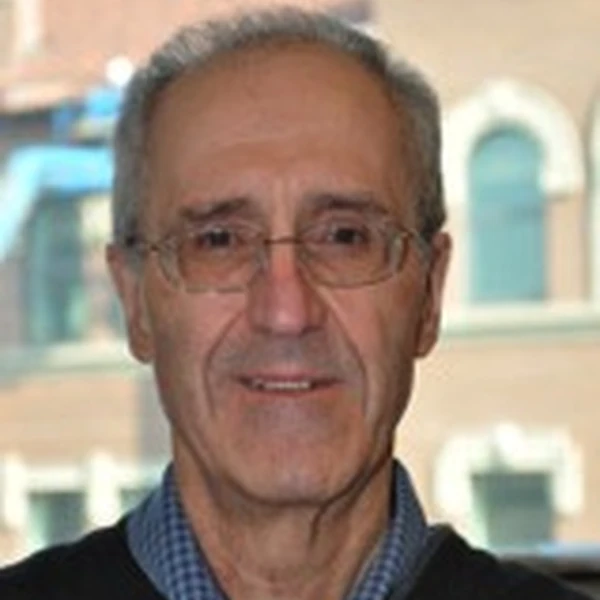

Synbio Technologies · AIDD
AI-aided gene synthesis: from 10 billion bases to AI-designed sequences
Building the AI layer for gene synthesis, AIDD, antibody discovery, mRNA, protein expression, and DNA storage.
Read the project
Structural biology gave me the ground truth. AIDD is where I am taking it. Thirteen projects across structure, enzymology, protein design, and AI for drug discovery, with the same rule throughout: make a structural or computational claim that an experiment can test.
Synbio Technologies · AIDD
Building the AI layer for gene synthesis, AIDD, antibody discovery, mRNA, protein expression, and DNA storage.
Read the project
Loyola University Chicago · Enzymology
More than 20 structures of a central starch and glycogen enzyme, mapping two AMP sites, activator promiscuity, and an entropy-driven catalytic mechanism.
Read the project
Curia Global · Moderna collaboration
A cross-functional program spanning antibody data curation, AI design, computational evaluation, and wet-lab expression testing.
Read the project


